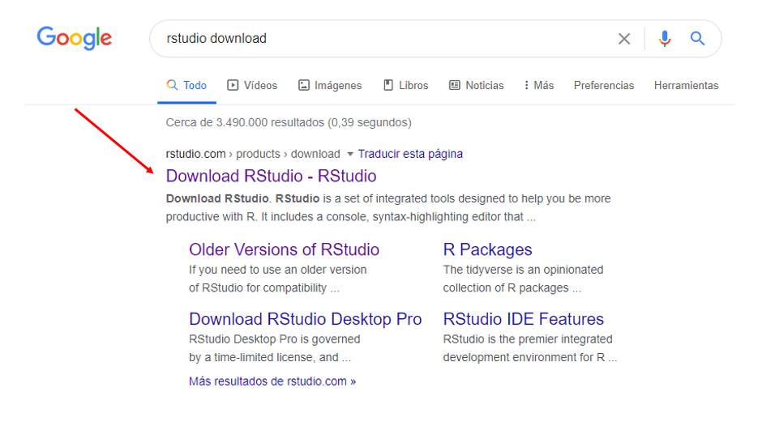
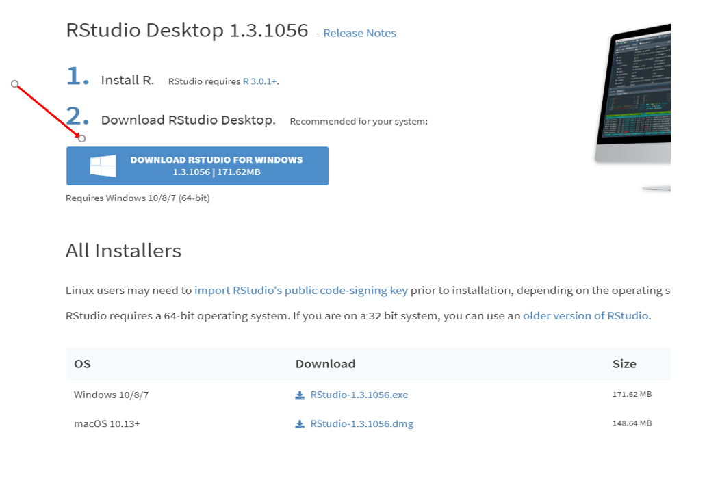
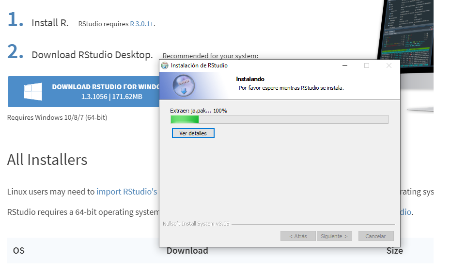
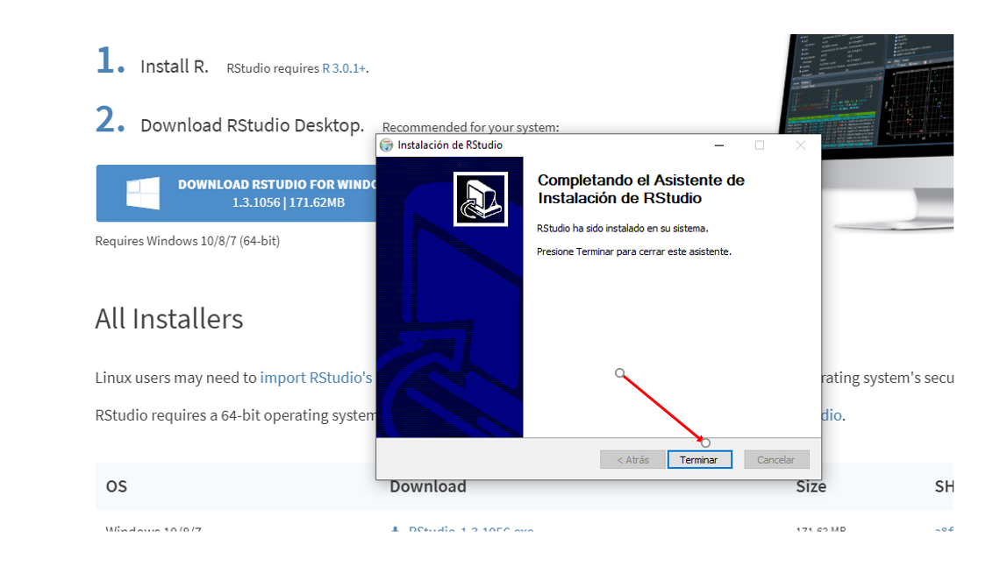

1.2 Instalar Rstudio
Una vez hemos instalado R en nuestros computadores, el paso a seguir es instalar Rstudio. Para ello, procedemos a ejecutar los siguientes pasos.
- Paso 1
El primer paso, como se ilustra en la Figura de abajo, consiste en buscar Rstudio en google. Para ello, en la barra de google se ingresa la siguiente palabra “r studio”.

- Paso 2
En segundo lugar, como se ilustra en la Figura de abajo, se deve dar clic en la opción Download Rstudio - Rstudio

- Paso 3
En tercer lugar, como se ilustra en la Figura de abajo, en la parte baja de la ventana se debe dar clic en la opción *DOWNLOAD; la que está debajo de la opción Free.

- Paso 4
En cuarto lugar, como se ilustra en la Figura de abajo, se debe dar clic en la opción DOWNLOAD RSTUDIO FOR WINDOWS.

- Paso 5
En quinto lugar, como se ilustra en la Figura de abajo, se debe dar sí en la ventana emergente. Esta ventana, según los esquemas de seguridad instalados en nuestros computadores, puede o no emerger. Si no emerge, pasa directamente al paso 6.

- Paso 6
En sexto lugar, como se ilustra en la Figura de abajo, en la ventana emergente dar clic en la opción Siguiente y de allí, en adelante, dar siguiente a todas las ventanas que aparezcan hasta que inicie la descarga del programa.

- Paso 7
En septimo lugar, como se ilustra en la Figura de abajo, una vez el software es descargado en nuestros equipos, se debe dar clic al archivo descargado e iniciar su proceso de instalación. El proceso de instalación de Rstudio puede tardar algunos minutos.

- Paso 8
En octavo lugar, como se ilustra en la Figura de abajo, una vez a finalizado el proceso de instalación, se debe dar clic en la opción Terminar.

- Paso 9
En noveno lugar, como se ilustra en la Figura de abajo, se debe verificar que Rstudio quedó instalado en nuestros equipos. Esto se puede hacer a través de la barra de opciones de programas.